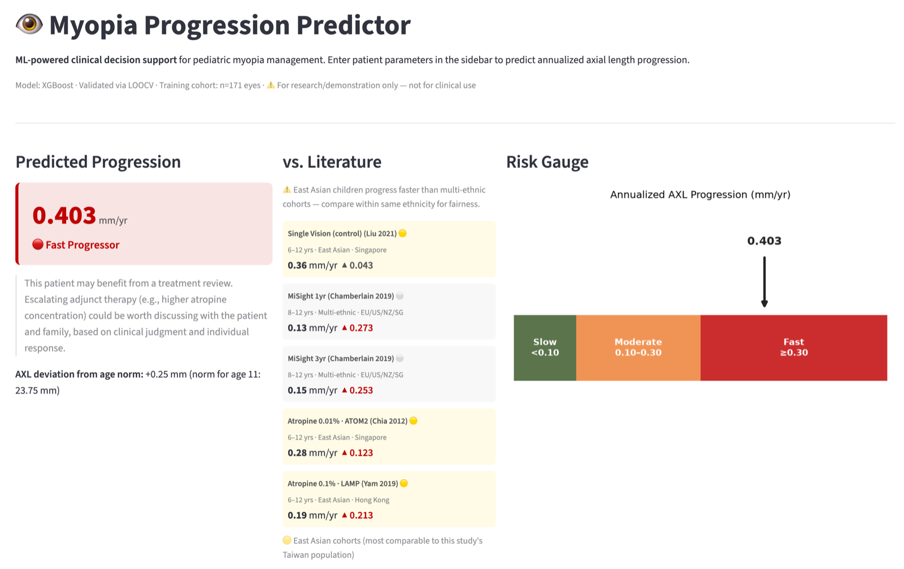

About
Hi, I'm Mark — a software engineer based in Sydney, by way of a first career in healthcare.
I spent years as an optometrist and then a technical consultant across the Asia-Pacific, helping people one patient, one clinic at a time. The turning point came on a data project: I built a model to predict patient outcomes and watched it change how clinicians made decisions. That was the moment it clicked — software could scale the kind of help I cared about far beyond a single consulting room.
So I went and earned a Master of Computer Science at the University of Sydney (with Distinction), and I haven't looked back. Today I build full-stack products end to end — TypeScript and Python, React and AWS, with a real interest in how AI can be used responsibly. I still volunteer with Vision Australia most weeks, because the “why” behind my work hasn't changed, only the tools have.
If there's a thread through all of it, it's this: I've always solved real problems with technology and data. I just build the solutions myself now.

What makes the difference
What sets me apart isn't just the code — it's what I bring around it.
I've changed fields before, which means I learn new domains fast and I'm not fazed by the unfamiliar. I've sat on the business side of the table, so I build with the end outcome in mind, not just the ticket — and I can be the person in the room who translates between engineers and everyone else, turning technical trade-offs into decisions non-technical people can actually act on.
And I care about the craft: writing code that's reliable, testable, and easy for the next person to pick up. I'd rather ask why before how, ship something real, and improve it — than build the perfect thing nobody needed. Whatever the team's working on, I'm the kind of person who's genuinely good to have on it.
Work experience
Sydney
Full-Stack Developer Intern
— Marketing Simplified (Codritium)- Delivered production full-stack features on a Django / Next.js platform within a collaborative, AI-assisted engineering team under agile and code-review workflows.
- Eliminated a production data-loss defect in recurring-event editing, protecting users' data across a live team platform.
- Hardened multi-tenant security across 60+ Django apps with a default-deny permission layer, closing cross-tenant (IDOR) risk.
- Kept the platform reliable and safe to ship with Prometheus/Grafana monitoring, automated tests, and an 85% CI/CD quality gate.
Taipei, Taiwan
Technical Consultant, Practice Development
— CooperVision- Built a unified longitudinal dataset that dispelled client doubts about product efficacy across regions and demographics.
- Developed an ML decision-support tool forecasting treatment outcomes, driving proactive planning and higher product adoption.
- Turned outcome data into visualizations clients presented at industry seminars, driving 43% year-over-year growth.
- Partnered across sales, marketing, and partner clinics to redesign the client journey, lifting conversion by 143%.
Taipei, Taiwan
Optometrist
— Puyi Optical- Delivered clinical care and consultations, providing tailored solutions to each client's individual needs.
- Built long-term client relationships through clear, empathetic communication and trusted, evidence-based advice.
- Supported and trained new team members, sharing clinical and service best practices internally.
Education
Sydney, Australia
Master of Computer Science
— University of Sydney- Technical: Cloud Computing, Machine Learning & Data Mining, Enterprise-Scale Software Architecture, Software Construction & Design, Model-Based Software Engineering, Data Structures & Algorithms, Data Analysis, Database Management Systems.
- Management: Project Management, IT Innovations, Professional Practice.
Taipei, Taiwan
Computer Science (Credit Courses)
— National Taiwan University of Science and Technology- Coursework: Discrete Mathematics, Algorithms, Programming Languages, Data Structures, Operating Systems.
Taichung, Taiwan
Bachelor of Optometry
— Chung Shan Medical UniversityLanguages: English (Professional, TOEFL 108) · Mandarin (Native) · Hokkien (Fluent) · Cantonese (Conversational)
Skills
The software I tend to reach for is reliable, easy to hand over, and privacy-conscious — even when that means a little more work up front.
See more
Frequently asked questions
What's your approach to a new project?
How do you think about healthcare + software?
What's your background?
Have a better question?
Send me a message and we'll talk through everything.